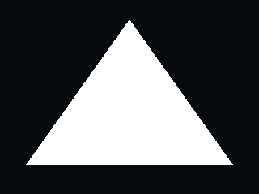
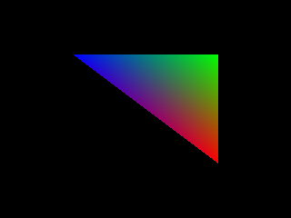
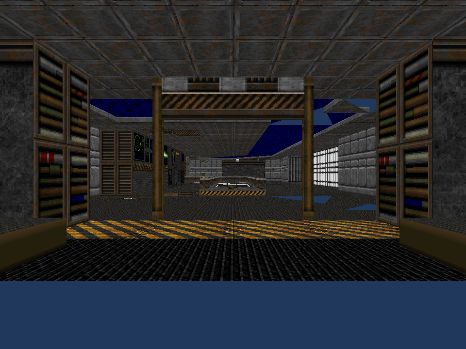
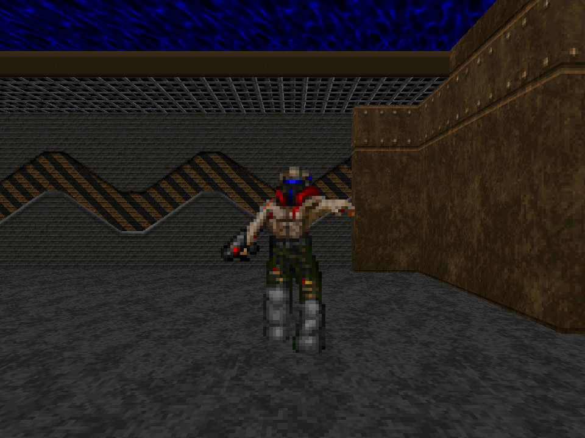

Read the processor.
SILICON is an experimental Rust workspace. The core renderer owns every stage that generates scene pixels. Window presentation and PNG encoding consume a finished CPU framebuffer.
01 / Run SILICON
git clone https://github.com/OthmaneBlial/silicon
cd silicon
cargo test --workspace
cargo run --release -p silicon-cli -- render showcase --output output/scene.png
cargo run --release -p silicon-cli -- run textured_cubeThe first build downloads Rust dependencies. Headless rendering does not need a display. Window mode exits with Escape, pauses with Space, and adjusts rotation with arrow keys. Scene JSON supports scene, width, height and time; see the scene descriptor.
02 / Graphics pipeline
The right-handed world has +Y up. Matrices are row-major; clip depth is 0..w. Six homogeneous planes clip before perspective division. Screen coverage uses i64 edge functions, 8 subpixel bits, pixel centers and the top-left rule.
Varyings use perspective reconstruction: sum(b × attribute / w) / sum(b / w). NDC depth remains affine. Texture derivatives approximate neighboring pixel centers and choose mip levels in texel space. Filters include nearest, bilinear and trilinear, with clamp, repeat and mirror addressing.
Stencil and early depth tests precede shading. A discarded native or SIR fragment writes neither depth nor the stencil pass result. Blending supports replace, source alpha, additive and multiplicative modes. See the full pipeline notes and architecture source.
03 / Shaders & commands
The lit OBJ scene runs ordinary GLSL through SPIR-V and SIR; native Rust closures provide an independent reference. The shader cube executes both stages through SIR, a validated vec4 register machine with bounded input, uniform, texture and output slots. It supports arithmetic, dot products, normalization, swizzles, matrix transforms, texture samples, structured selections, Phi/local merges, early return and discard.
Owned commands bind typed vertex/index/uniform buffers, textures and shader pipelines. Submission is synchronous. Versioned frame captures contain the actual resources and bytecode; replay submits them directly. Captures currently support the SIR path.
cargo run --release -p silicon-cli -- render shader_cube --capture output/frame.silicon
cargo run --release -p silicon-cli -- inspect output/frame.silicon
cargo run --release -p silicon-cli -- replay output/frame.siliconRead the SIR instruction and binding contract →
Embedding SILICON through the supported Rust API →
Using SILICON through the versioned C ABI →
Ordinary GLSL, running on the CPU
The SPIR-V 1.0 subset reads externally compiled vertex and fragment shaders, checks supported types and interfaces, and lowers them to SIR. It accepts acyclic structured selections in one main function with the documented binding contract. Branches carry per-lane execution masks and reconverge surviving fragments; discarded and returned lanes stay terminated. Loops and switches remain unsupported. The `shadow_showcase` samples a CPU-generated depth map at explicit LOD. The `stencil` portal constrains both textured geometry and an alpha-blended overlay. Compiler tools are only needed to regenerate fixtures.
cargo run --release -p silicon-cli -- run spirv_showcase --threads 4
cargo run --release -p silicon-cli -- run spirv_cutout --backend simd
cargo run --release -p silicon-cli -- render shadow_showcase --backend simd --threads 4 --output output/shadows.png
cargo run --release -p silicon-cli -- run spirv_cube
cargo run --release -p silicon-cli -- inspect-shader assets/shaders/textured.frag.spv
cargo run --release -p silicon-cli -- render-shaders assets/shaders/textured.vert.spv assets/shaders/textured.frag.spv --output output/glsl.pngExact SPIR-V subset, bindings, limits and reproduction →
04 / Explain a pixel
The debugger reports covering primitives, barycentrics, varyings, depth comparisons and output color. The SIR path additionally traces executed instructions and texture samples for fragments that pass the fixed-function tests.
cargo run --release -p silicon-cli -- debug-pixel spirv_showcase --pixel 480,32005 / Measure the renderer
Scalar rendering is the reference. Optional NEON/AVX2 evaluates four coverage lanes; NEON/SSE executes recorded SIR fragment shaders in masked groups of four. Vertex shaders and native Rust closures remain scalar. Parallel workers own disjoint horizontal bands with local 16×16 tiles; geometry setup repeats per band.
cargo run --release -p silicon-cli -- benchmark showcase --frames 30 --backend scalar --threads 1
cargo run --release -p silicon-cli -- benchmark spirv_showcase --frames 30 --backend simd --threads 4 --report output/frames.json
cargo run --release -p silicon-cli -- profile showcaseBenchmarks report measured median, p95, render throughput, shaded pixels and submitted triangles. Stage timings accumulate worker work; they can exceed elapsed wall time. PNG encoding and window presentation are excluded from the render benchmark. Host load affects results. JSON reports retain chronological frame times, actual shader packet occupancy and executed instruction/sample/discard counts. Vertex work repeated by bands contributes to executed instruction counts; submitted geometry remains counted once. Read SIMD execution and mask checks →
06 / Vulkan-like Rust subset
silicon::vulkan_like provides one software instance/device, typed vertex/index/uniform buffers, RGBA8 images, SPIR-V pipelines, descriptor-like bindings, an offscreen render pass and synchronous indexed draws. It writes the CPU framebuffer directly. This is a Rust adapter, not Vulkan's loader, ABI, or a conformant driver. Read the subset contract →

07 / Khronos Vulkan sample
Phase 69 adapts KhronosGroup Vulkan-Samples hello_triangle at a pinned upstream commit. The original three vertices, RGB colors, shaders and non-indexed draw run through SILICON after a documented vertex-layout adjustment. Read the source, license, and adaptation notes →

08 / DOOM WAD gameplay slice
Phase 70 renders Freedoom E1M1 map geometry and all 29 cutout enemy billboards from the WAD: 4,870 triangles across 170 SILICON draws in the checked-in capture. WAD nodes locate things in subsectors. The interactive prototype adds first-person movement, collision, hitscan shooting, health and ammunition, plus pursuing melee enemies. BSP visibility, masked walls and full Doom rules remain. The WAD stays external. Read the source, screenshot, license and limits →


Sprite check from the same WAD with only the player start moved into the enemy corridor.
09 / Current boundaries
SPIR-V support is a strict graphics subset. General SPIR-V/GLSL compatibility, WGSL, conformant Vulkan/OpenGL drivers, compute, JIT and full-game compatibility are not implemented. Phase 70 is an experimental E1M1 gameplay slice. MSAA is supported by the renderer. The small Vulkan-like Rust subset is not a Vulkan loader or binary interface. No existing software rasterizer generates the scene. This is a research renderer, not a conformant graphics driver.
External sizes, indices, shader registers, resource bindings and command sequences are checked. Captures have a 64 MiB input limit. The project is not a hardened hostile-workload sandbox. SIMD unsafe code is isolated; parallel framebuffer memory belongs to individual workers.
Input and memory boundaries →
Working milestones and future research →